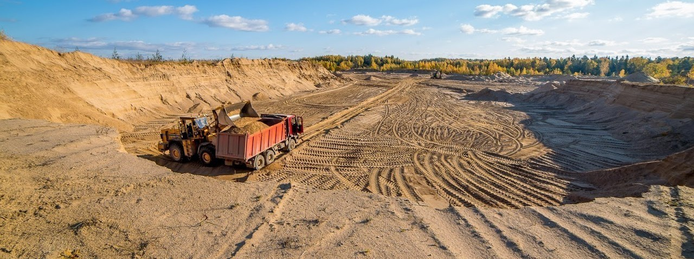
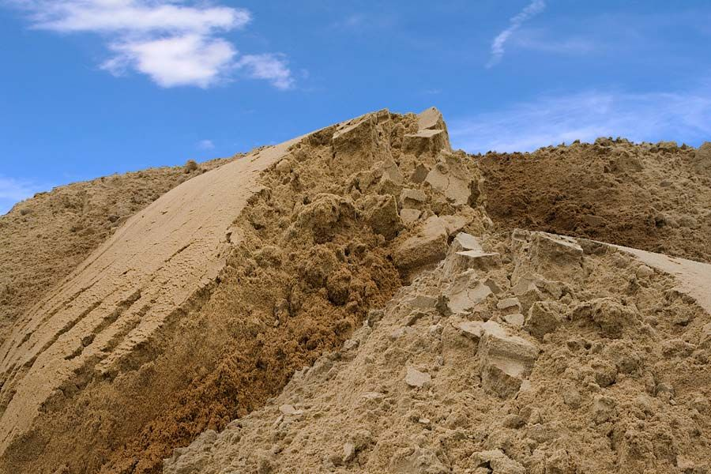
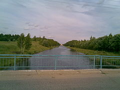
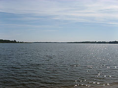
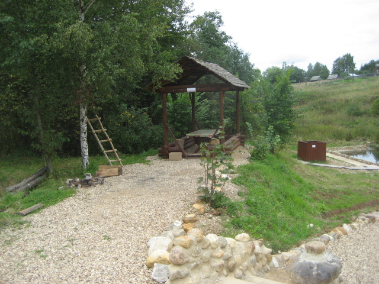

Зубцов
Месторождения кварцевых и селикатных песков
В Зубцовском районе наиболее распространены силикатные, кварцевые и строительные пески (78 наименований). Имеются залежи кирпично-черепичных и керамзитовых глин, карбонатного сырья для производства извести и известняковой муки.
Месторождения кварцевых песков зарегистрированы у деревень Яйково, Пищалино, Балышево и Батаково. Залежи известняка и мергеля в районе деревень Шишкино и Саблино на северо-востоке района. Известно одно месторождение сапропеля в районе д. Озерецкое Дорожаевского сельского поселения. На территории района имеются запасы торфа.
 Плотина Вазузской гидротехнической системы
Подъёмный канал из Вазуского водохранилища в Яузское
Вид Вазузского водохранилища с левого берега
На реке Вазузе, близ города Зубцова, расположен крупный промышленный объект – Вазузская плотина, которая формирует обширное водохранилище, доходящее до границ Смоленской области. Проектирование гидротехнической системы началось еще в 1957 году. Плотина вошла в действие в конце семидесятых.. Водохранилище затопило так называемый Фоминский городок – старинное городище, относящееся к периоду феодального дробления Руси.Данное водохранилище служит крупным центром рыбного хозяйства – в основном, тут разводятся и вылавливаются частиковые рыбы, такие как щука или судак. Вазузское водохранилище обеспечивает водоснабжение Москвы
Источник «Журчащий».
Родник, освященный в честь святителя Николая Чудотворца расположен за юго-западной окраиной деревни Курьково.
Целебный источник стал широко известен в средние века, когда местные жители заметили, что регулярное умывание водой из этого источника помогает излечить болезни глаз и многие другие недуги. Ученые обнаружили в этой воде большой процент серебра, который и выполнял функции антисептика.
Возможно, именно его наличием объясняются удивительная искристость воды из этого источника и необыкновенно красивое звуковое журчание.
Температура родниковой воды постоянна: +7 градусов. Паломники купаются в бассейне у источника круглый год, но никто после купания в источнике святителя Николая не заболел – таковы, должно быть, свойства воды.